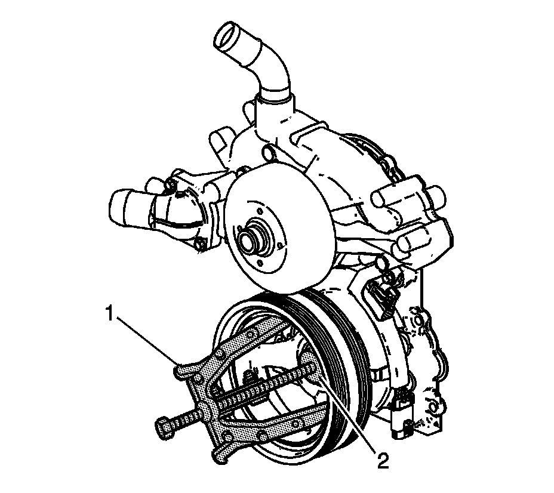

2. Crankshaft Balancer Removal
Crankshaft Balancer Removal
Tools Required
^ J 41816-A Crankshaft Balancer Remover
^ J 41816-2 Crankshaft End Protector
^ J 42386-A Flywheel Holding Tool

Notice: Refer to Fastener Notice.
Important: Do not use the crankshaft balancer bolt again. Install a NEW crankshaft balancer bolt during final assembly.
1. Install the J 42386-A (1) and bolts.
Use 1 M10 - 1.5 x 120 mm and 1 M10 - 1.5 x 45 mm bolt for proper tool operation.
Tighten the J 42386-A bolts to 50 N.m (37 lb ft).

2. Remove the crankshaft balancer bolt (139).
Do not discard the crankshaft balancer bolt. The balancer bolt is used during the balancer installation procedure.

3. Use the J 41816-A (1) and the J 41816-2 (2) in order to remove the crankshaft balancer.

4. Remove the balancer (138).
5. Remove the J 42386-A (1) and bolts.